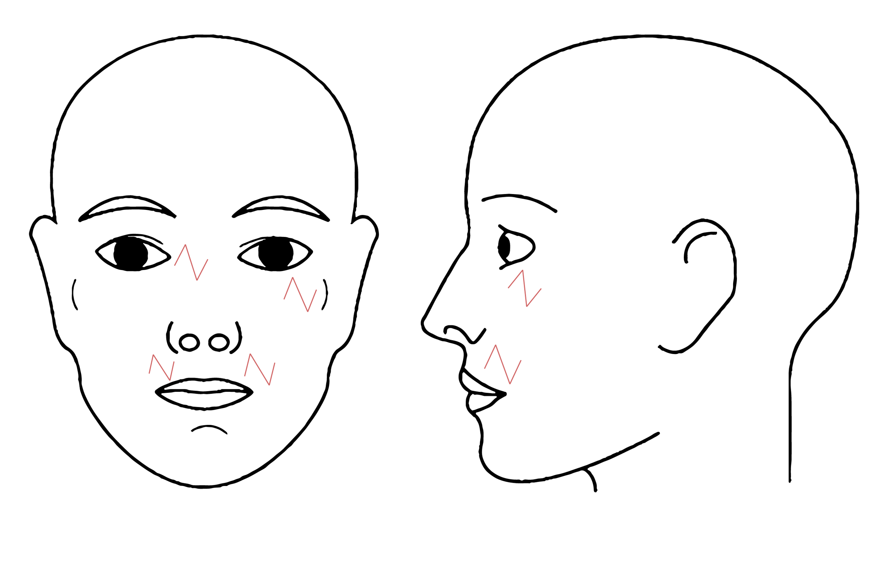

Site typically suitable for a rhomboid flap
- Scars that cross the melolabial crease
- Scars located in the concave areas of the neck
- Radial contractures that traverse the concavities of the auricle
- Scar bands that cross the concave medial canthal region
- Ectropions and retractions of the lower eyelid caused by vertically oriented scar
- Contracted lip scars
- To help restore a normal contour to the vermilion border 